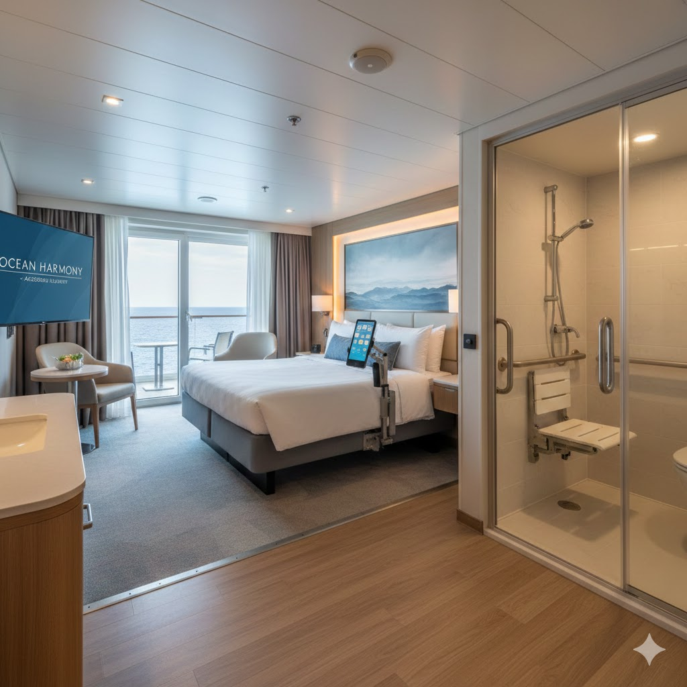

Signature Accessible Suites: Ultimate Comfort & Space
Designed to exceed ADA standards, our Signature Accessible Suites offer an unparalleled level of luxury, space, and thoughtful design for guests with intellectual and/or physical disabilities. Enjoy a true, five-star vacation where every detail has been considered for your peace of mind.
Key Accessible Amenities
- Extra-Wide Access:
- All doorways (suite and bathroom) are extra-wide (36 inches) for easy wheelchair and scooter maneuverability.
- Roll-In Shower:
- A spacious roll-in shower with a fold-down bench, adjustable hand-held shower nozzle, and easy-to-reach grab bars.
- Height-Adjustable Features:
- Lowered light switches, thermostats, and electrical outlets, along with an accessible vanity sink in the bathroom.
- Assistive Technology Integration:
- Bedside control panel for lights, curtains, and climate control, featuring tactile buttons and screen reader compatibility. A portable communication tablet is also available upon request for non-verbal guests.
- Enhanced Sleeping Comfort:
- Option for a motorized adjustable bed with side rails and transfer assistance space on both sides.
- Emergency Features:
- Visual and auditory emergency alarms and an integrated suite-to-staff communication system.
- Private Veranda:
- Oversized balcony with a seamless threshold and ramp access to enjoy the ocean view.
Luxury Suite Features
- Size:
- Approximately 450 sq. f. of living space.
- Bedding:
- Premium king-sized bed with high-thread-count linens.
- Living Area:
- Separate sitting area with a convertible sofa.
- Concierge Service:
- Dedicated Suite Concierge available 24/7 to assist with dining reservations, excursion planning, and in-suite requests.
- Dining:
- complimentary full-service in-suite dining (breakfast, lunch, and dinner).
Pricing
| 7-Night Voyage | Low Season (per person) $4,200.00 |
High Season (per person) $5,800.00 |
|---|---|---|
| 10-Nght Voyage | Low Season (per person) $5,900.00 |
High Season (per person) $7,900.00 |
Note: Pricing includes all meals, non-alcoholic beverages, and standard activities.
Caregiver Discount: Certified caregivers staying in the same suite receive a 25% discount on the listed price.
